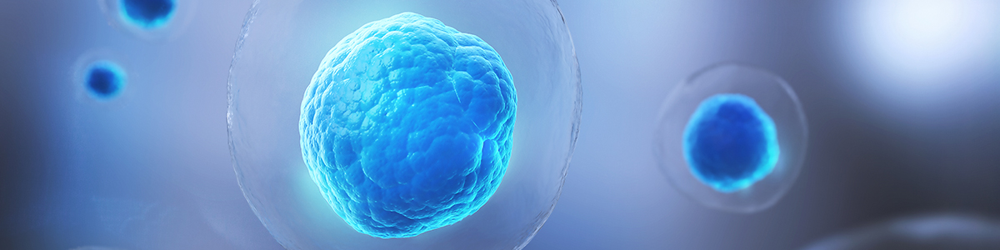

-
암 면역 센터
- 정확한 진단과 근본적인 원인을 치료하는 병원이 되겠습니다.
암 면역 센터 소개

- 암 면역 치료란?
- 해밀병원에서는 다양한 암 면역 치료 프로그램을 진행하여 환자 각 개인의 증상 및 부작용에 맞추어 최선의 맞춤 면역 치료를 진행하고 있습니다.
- 암 치료 전문 의료진으로 구성되어 항암, 방사선 치료 중 부작용 및 통증을 완화하고 환자의 면역 검사를 진행하여 맞춤 암 검진 클리닉 및 치료 클리닉을 운영하고 있습니다.
통합 암 치료 / 암 재활치료
-
고주파
온열치료 -
통증치료
-
면역주사
치료 -
림프질환
치료 -
통증재활
치료 -
근적외선
치료 -
메가비타민
-
멀티미네랄
재발과 전이로부터 탈출
-
- STEP. 1
- 해밀병원으로
찾아옵니다.
-
- STEP. 2
- 담당 주치의
원장님과 깊은
상담을 합니다.
-
- STEP. 3
- 상담 후 해밀병원의
‘항암면역검사
(혈액검사)’를
합니다.
-
- STEP. 4
- 결과까지
차분한 마음으로
기다립니다.
-
- STEP. 5
- 담당 주치의
원장님과
검사결과를 놓고
상담합니다.
-
- STEP. 6
- ‘개인별
맞춤면역치료’
일정을 짭니다.
-
- STEP. 7
- ‘개인별
맞춤면역치료’를
받습니다.
-
- STEP. 8
- 추적관리
-
- STEP. 9
- 중간 결과를 가지고
힘을 내서
치료합니다.
-
- STEP. 10
- ‘재발과 전이’로부터
‘안녕’을 고할 시간이
다가옵니다.
-
- STEP. 11
- ‘개인별
맞춤면역치료’
일정을 마치고
최종 결과를
기다립니다.
-
- STEP. 12
- 드디어
‘재발과 전이’로부터
대탈출 성공!!